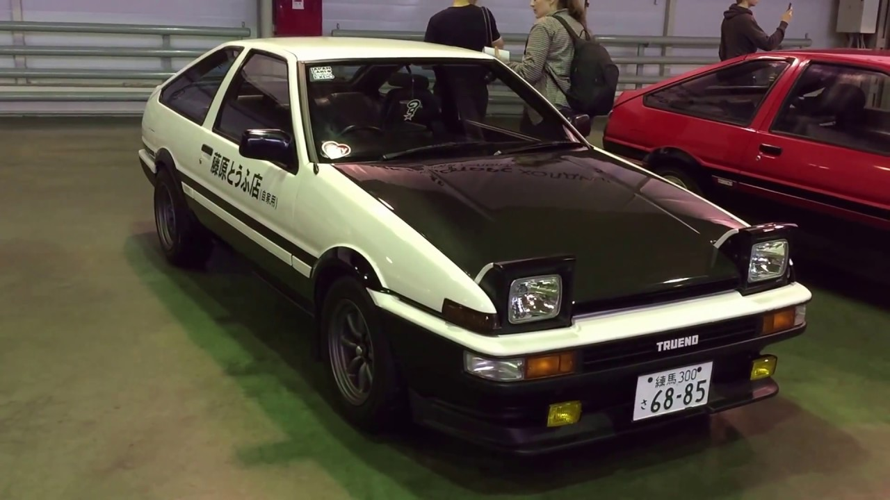

Годы выпуска 1984-1987
Тип двигателя L4 DOHC
Объем двигателя, см3 1600
Наименование двигателя (мощность л.с.) JP spec 4A-GEU (124)
Привод задний
Колесная база, мм 2400
Длина, мм 4204
Ширина, мм 1626
Высота, мм 1336
Снаряженная масса, кг 925 (купе) 940 (хэтчбек)
Интересные факты:
1 Один из инженеров-создателей, Нобаки Катаяма (Nobuaki Katayama), позже возглавил департамент компании Toyota по моторспорту. Он же стал главным инженером автомобиля Toyota Altezza, который был выпущен в следующем десятилетии. Журнал CAR рассказывает, что в кабинете у Нобаки висела фотография AE86.
2 AE86 – эти 4 символа заводского кода носят в себе полезную информацию. Например, A – обозначение модели двигателя (моторы серии 4A); E – обозначает модель Corolla; цифра 8 – пятое поколение (серия кузовов E80); 6 – вариация с 1.6 моторами внутри поколения.
3 Многие путают и спорят о различиях Levin и Trueno – кузова с классическими фарами носили название Levin, а со слепыми фарами назывались Trueno.
4 AE86 и AE85 стали последними заднеприводными автомобилями своего типа, ведь в то время большинство легковых автомобилей становились переднеприводными.
5 AE86 стала вдохновением для современного спорткара Toyota 86 (GT86, Scion FR-S, Subaru BRZ):
Toyota AE86 стала самым любимым автомобилем легендарного дрифтера Кэити Цутия:

Toyota Corolla AE86 – это классика, это легенда, это мечта для любого автолюбителя, который знает толк в машинах. И не важно будет ли это Corolla Levin или Sprinter Trueno, такой автомобиль станет венцом любой коллекции или победителем извилистой трассы. «Как корабль назовешь, так он и поплывет» — выражение, которое абсолютно подтверждается историей успеха модели AE86, названой цифрами, символизирующими в Азии богатство и счастье. Действительно эта «лошадка» имеет очень богатую и счастливую историю, хотя поначалу ничего не предвещало такой оглушительный успех. За свою популярность она даже получила знаменитое имя «Хачироку», состоящее из произношения по-японски числа 86.